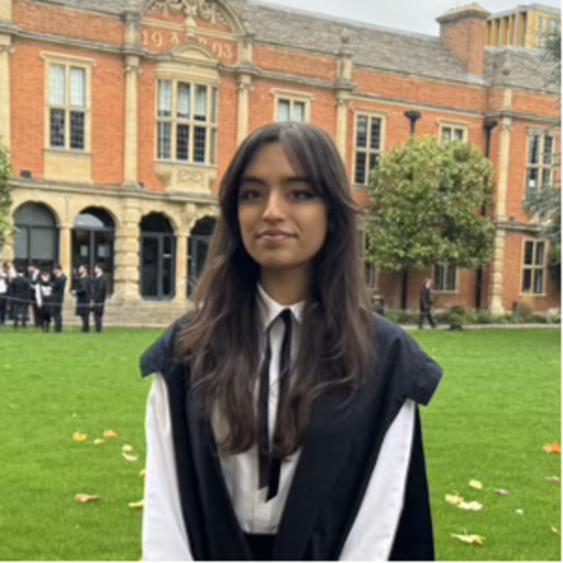

Reyna Bulchandani.
Reading Maths & CS at Oxford. Recent Jane Street first-year alum. Curious about quant, machine learning, and what sits between the two.
Where I am now.
I'm a first-year undergraduate at the University of Oxford, reading the BA in Mathematics and Computer Science, in the cohort graduating in 2028.
Most recently I completed Jane Street's First-Year Trading & Technology Program in London — applying expected-value reasoning across probability games, asymmetric-information simulations, and trading-style decision making.
Outside the curriculum I'm interested in quantitative finance, machine learning, and the places where mathematical thinking meets real-world systems.
Programmes & internships.
Explored trading concepts through probability games and simulations. Applied expected-value reasoning in strategy games involving incomplete information and dynamic decision-making, building intuition for pricing and risk through trading-style simulations with asymmetric information.
Selected for a competitive insight programme on applications of STEM in finance — trading, risk, and wealth management. Co-designed and pitched a prototype medical-tracking app under tight time constraints.
Conducted an accessibility audit of a corporate website against WCAG guidelines. Identified three high-impact improvement areas and proposed redesigned sitemaps; recommendations were incorporated into ongoing design work.
Awarded a fully funded place on a five-day digital innovation programme. Designed and pitched a sustainability-focused technology solution within an incubator-style environment, with exposure to Python fundamentals and data analysis.
Selected for Cisco's Pathways programme. Led a team of six to design and pitch an inclusivity-focused educational app, coordinating development and structuring the final presentation. Awarded overall winners by a panel of Cisco professionals.
Completed a remote work-experience programme on logistics and supply-chain strategy, presenting a proposal on efficiency improvements in 3PL operations.
Where I've studied.
- MathematicsA* · 95%
- Further MathematicsA* · 97%
- PhysicsA*
- Computer ScienceA*
- EPQ — Quantum ComputationA
- 10 × GCSEs9–8
Selected achievements.
In correspondence.
The best way to reach me is on LinkedIn. Always happy to hear from anyone interested in mathematics, computer science, quant finance, or just a curious conversation.
Connect on LinkedIn